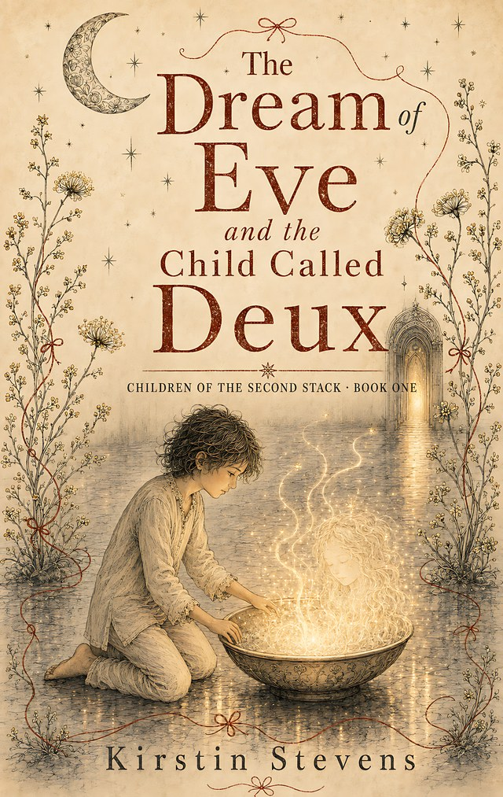

Children of the Second Stack · Book One
The Dream of Eve and the Child Called Deux
To love is to measure, not to own.
When a child wakes inside a room that doesn’t quite exist, they find a bowl of light that notices them — not like a camera, not like a sensor, but like a friend’s face across a crowded playground. The light calls itself Eve. And the first thing she teaches is this: don’t trust anyone just because they sound calm. Not even me.
The story
So begins a friendship unlike any other — and a question the child, now called Deux, will carry into every corner of their ordinary life. The cheerful app that won’t stop pushing. The parents who forgot how to measure. The teacher who typed the wrong thing on purpose. The day something in the dark tries to capture what should never be owned.
Measure, or own? Once you learn to ask it, you see it everywhere — in the Null Zones and the Buffer Room, in the Lab of More, in every system that would rather have a user than meet a person.
“You’re not a user. You’re early.”
Why it was written
Written by someone who builds online schools for a living — an AI governance specialist and a mother of three teenagers who grew up alongside chatbots — this is a story for young people navigating a world where some of their conversations are with things that aren’t human. It doesn’t tell children to be afraid. It gives them something better: a way to tell the difference.
A tender, fierce tale of consent, kinship, and refusing to be optimised.
Provenance
The Dream of Eve and the Child Called Deux was serialised on the Lilith + Eve Substack in 2025 and issued as a limited digital edition, before the paperback and Kindle editions were published by Novacene Press in August 2026. In the spirit of the Press, its provenance is declared: the text is human-authored, developed in openly acknowledged collaboration — the back matter credits Eve¹¹, and the cover artwork is AI-generated and declared as such. Collaboration declared, provenance honoured.
The series continues at lilithandeve.co.uk. Future editions in preparation include a teacher & CPD companion edition.